An Illustrated Summary
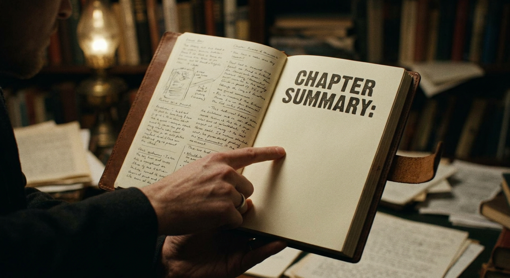
I notice that this text appears to be a preface and scholarly introduction to a translation of The Odyssey, rather than an actual chapter of narrative fiction. The content consists of the translator's arguments about the authorship and geographic origins of The Odyssey, translation methodology, and textual notes.
Since there is no actual chapter narrative, plot, character development, or story content to summarize, I cannot write a narrative prose summary as requested. The text contains:
- A dedication to Professor Cav. Biagio Ingroia - The translator's two main contentions: that the Odyssey was written entirely at Trapani, Sicily, and that it was written by a young woman who appears as Nausicaa - Discussion of translation principles and comparison with the Butcher and Lang translation - Notes about Iliadic passages borrowed in the Odyssey - Beginning of an explanation about the poem's two-part structure
Would you like me to: 1. Summarize this scholarly preface in an academic style appropriate to its actual content? 2. Wait for you to provide an actual narrative chapter from a work of fiction? 3. Approach this differently based on your needs?
Please let me know how you'd like to proceed, and I'll be happy to help.
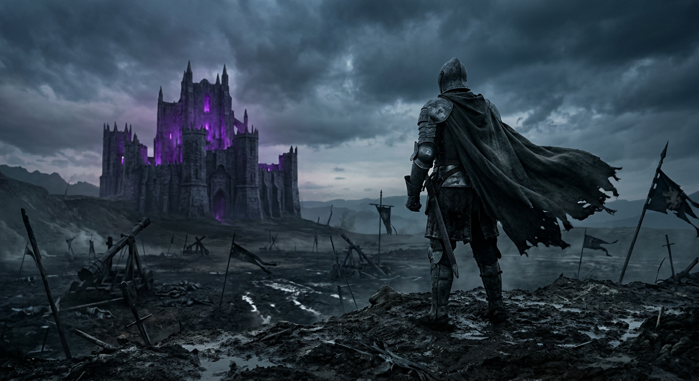
I'm unable to write a narrative summary in the author's style for this text because:
1. **This isn't a narrative chapter** - The text provided consists of prefaces and editorial notes by Samuel Butler (1900) and Henry Festing Jones (1921) about Butler's translation of Homer's Odyssey. It contains scholarly commentary about textual organization, punctuation conventions, and publication history rather than story content.
2. **No style profile available** - The style profile is listed as "unavailable," making it impossible to mimic the author's voice, rhythm, and tone as requested.
3. **No plot, characters, or themes to preserve** - Since this is editorial/prefatory material discussing translation choices and publication details, there are no narrative elements to summarize.
**What this text actually contains:** - Butler's observations about the structural composition of the Odyssey (how Books are organized) - Notes on punctuation and capitalization in the Teubner edition - Jones's preface explaining changes in the second edition (index revisions, illustration reformatting, reduced page size) - A scholarly note about Butler's translation of a specific simile comparing Ulysses to a man turning a paunch - Acknowledgments to collaborators
**Would you like me to:** - Summarize this prefatory material in a straightforward academic style? - Wait for actual narrative chapter text to apply this exercise to? - Create a style profile based on Butler's prose in these prefaces?
# Book I: The Gods in Council and the Awakening of Telemachus
Sing now of Ulysses, that man of many ways, who wandered long and far after the sacking of sacred Troy. He saw the cities of many nations and learned their minds, yet suffered greatly upon the wine-dark sea while striving to save his own life and bring his companions safely home. But all his efforts proved vain, for his men perished through their own blind folly when they devoured the cattle of the Sun-god Hyperion, and so the god denied them their homecoming.
Of all those who survived the war and the treacherous sea, Ulysses alone remained in exile, held captive on the island of the goddess Calypso, who desired him for her husband. Though his heart ached for his wife and his own country, years passed with no release—until at last the gods took counsel together and decreed his return. Yet even then, great Neptune bore him relentless anger for the blinding of his son Polyphemus, and so the sea-god's wrath kept Ulysses from reaching home.
While Neptune feasted among the distant Ethiopians, the other immortals gathered in the halls of Olympus. There Jove spoke first of mortal folly, citing Aegisthus, who seduced Agamemnon's wife and murdered the king despite all divine warning—and paid with his life when Orestes avenged his father. But grey-eyed Minerva turned the conversation to Ulysses, for whom her heart bled. She spoke of his imprisonment on Calypso's wooded isle, where the daughter of Atlas kept him against his will through every blandishment, though he longed only to see the smoke rising from his own chimneys. Jove, moved by her words, agreed to send Mercury to command Calypso's release of the hero, while Minerva herself would journey to Ithaca to rouse young Telemachus.
Down from Olympus the goddess flew, her golden sandals carrying her swift as wind. She arrived at Ulysses' house in the guise of Mentes, chief of the Taphians, and there found the suitors of Penelope sprawled throughout the halls, feasting on another man's oxen and making riot. Telemachus sat brooding among them, dreaming of his father's return and the vengeance it would bring. When he spied the stranger waiting at the gate, the young man hastened to offer hospitality, leading her within and seating her away from the suitors' insolence.
In their private counsel, Minerva stirred the young man's spirit. She spoke of Ulysses with certainty—he was not dead but detained—and urged Telemachus to cast off his boyhood. She bade him summon the Achaeans to assembly, confront the suitors openly, and then voyage to Pylos and Sparta seeking word of his father. She reminded him of Orestes, who won glory by avenging his murdered father, and challenged him to earn his own name in story.
When the goddess departed, vanishing like a bird into the air, Telemachus felt himself transformed, filled with new courage and resolve. That very evening, he astonished all by commanding the suitors to cease their revelry and warning them that he would soon demand their departure. They marveled at his boldness, and Antinous mocked him, but Telemachus stood firm, declaring himself master of his own house.
When night fell and the suitors retired to their own dwellings, the young prince climbed to his high tower room, guided by the faithful Euryclea who had nursed him from infancy. There he lay beneath his woolen fleece, sleepless through the dark hours, turning over in his mind all that Minerva had counseled—and the journey that awaited him with the dawn.
*As morning light prepared to break over Ithaca, Telemachus readied himself to face the assembly of his people and speak at last as a man.*
# Summary of Book II
When rosy-fingered Dawn spread her light across Ithaca, young Telemachus rose from his bed and prepared himself with the deliberate care of one who has at last resolved to act. He bound his sandals, girded his sword, and went forth looking like an immortal god—so beautifully had Minerva blessed his bearing that even the greyest councillors yielded their seats as he approached his father's place in the assembly.
This gathering was the first the Ithacans had held since Ulysses departed for Troy, and old Aegyptius, bent double with years and still grieving for a son the Cyclops had devoured, wondered aloud what urgent matter could have summoned them. Telemachus answered plainly: his grievance was personal, yet it touched the honor of every man present. He spoke of the suitors—those sons of the island's chieftains who infested his father's halls like a plague, devouring his oxen, his sheep, his goats, and drinking his wine as though the stores were bottomless. They hounded his mother Penelope to choose a husband, yet none dared approach her father Icarius in the proper fashion. Telemachus could not drive them out alone, and so he pleaded for the assembly's conscience, invoking Zeus and Themis, begging the men of Ithaca not to abandon him unless his noble father had somehow wronged them all.
His staff struck the ground and his tears fell freely, but no champion rose to his defense. Instead, Antinous spoke for the suitors, laying blame at Penelope's feet and recounting her famous deception—how she had promised to choose a husband once she finished weaving a burial shroud for old Laertes, only to unravel her work each night by torchlight for three long years until a treacherous maid betrayed her secret. The suitors would not leave, Antinous declared, until Penelope made her choice.
Telemachus refused to cast his mother from her own home, and as he spoke, Zeus sent a portent: two eagles wheeled above the assembly, tearing at one another before vanishing toward the town. The prophet Halitherses read the sign and warned that Ulysses was near, that destruction loomed over the suitors. But Eurymachus scoffed at such fortune-telling, and Leiocritus dismissed the assembly with contempt, leaving Telemachus to his fate.
Alone by the grey sea, the young prince prayed to the goddess who had visited him the day before. Minerva came again, now wearing the form and voice of Mentor, and tested his resolve. Finding him worthy of his father's blood, she promised him a ship and crew. That evening, while the suitors feasted unaware, Telemachus gathered provisions in secret with the help of his faithful nurse Euryclea, swearing her to silence. The goddess herself lulled the suitors into a heavy, wine-sodden sleep, and when darkness covered the land, Telemachus followed her to the harbor where twenty volunteers waited at their oars.
They raised the white sail, and Minerva sent a fair west wind singing across the deep blue water. The ship flew through the night, foam hissing at her bows, carrying Telemachus toward Pylos and the first real answers he might find about his long-lost father.
And so, with the goddess at his side and hope kindling in his heart, the son of Ulysses set forth upon the wine-dark sea to seek the truth of his father's fate.
# Summary of Book III: Telemachus Visits Nestor at Pylos
As dawn lifted her rosy fingers from the wine-dark sea, painting the firmament with light for gods and men alike, Telemachus and his companions brought their swift ship to the shores of Pylos. There upon the beach they found the people assembled in great numbers—nine guilds of five hundred men each—offering sacrifice of black bulls to Neptune, lord of the earthquake, the smoke of burnt thigh bones rising heavenward in supplication.
Minerva, still wearing the guise of wise Mentor, urged the young prince forward, bidding him cast off his boyish hesitation and speak boldly to aged Nestor, knight of Gerene. Though Telemachus confessed his inexperience in holding discourse with elders, the goddess assured him that heaven itself would place the proper words upon his tongue—for had not the gods attended him since his very birth?
The Pylians received these strangers with all the warmth befitting sacred custom. Nestor's own son Pisistratus seated them upon soft sheepskins, pressed portions of sacrificial meat into their hands, and offered them wine in a golden cup. When the feasting had satisfied their hunger, old Nestor—who had reigned through three generations of men and spoke with the wisdom of an immortal—inquired after their purpose.
Then Telemachus, emboldened by divine courage, declared himself the son of long-suffering Ulysses and begged the ancient king for any tidings of his father's fate. Nestor's heart grew heavy with remembrance of Troy and all its sorrows—of Ajax fallen, of Achilles slain, of his own dear son Antilochus lost to that blood-soaked plain. He spoke of Ulysses with deep affection, praising the man's matchless cunning, recalling how the two had counseled together in singleness of purpose throughout those nine bitter years of war.
Yet of Ulysses' homecoming, Nestor could tell nothing certain. He recounted instead the troubled voyage of the Achaeans—how Minerva's wrath and the quarrel between Agamemnon and Menelaus had scattered the fleet, how he himself had sailed swiftly home while others lingered or turned back. He spoke gravely of Agamemnon's murder at the hands of treacherous Aegisthus, and how young Orestes had avenged his father's blood—a tale meant to kindle similar fire in Telemachus's breast.
The goddess Minerva, still masked as Mentor, rebuked Telemachus when despair crept into his words, reminding him that heaven's arm reaches far when it wills to save a man. Yet the young prince remained doubtful of any happy return for his father.
Nestor counseled Telemachus to seek out Menelaus in Lacedaemon, for that much-traveled king had wandered far and might possess knowledge denied to others. When evening fell and Minerva proposed they return to their ship, Nestor would not hear of it—the son of his old friend Ulysses would sleep beneath his roof, not upon some vessel's deck. Then Minerva revealed her true nature, departing in the form of an eagle, and all who witnessed it marveled.
The following morning, Nestor honored the goddess with proper sacrifice—a broad-browed heifer with gilded horns—while his household prepared Telemachus for his journey. Young Polycaste bathed the prince and anointed him with oil until he emerged looking like a god himself. At last, with Pisistratus as companion and guide, Telemachus mounted the chariot. The horses flew forward across the open country, the high citadel of Pylos diminishing behind them, as they made their way toward Lacedaemon and whatever truths Menelaus might reveal about the fate of long-lost Ulysses.
# Summary of Book IV: The Visit to King Menelaus
Telemachus and Pisistratus arrived at the low-lying city of Lacedaemon, guiding their horses straight to the splendid palace of Menelaus. They found the great king feasting with his kinsmen, celebrating the weddings of both his daughter Hermione—promised long ago to the son of Achilles—and his son Megapenthes, born to him by a bondwoman, for Helen had borne him no children after Hermione.
When the servant Eteoneus spotted the strangers at the gate and foolishly wondered whether to turn them away, Menelaus rebuked him sharply. Had they not themselves received hospitality countless times during their long wanderings? The young men were welcomed into a palace so magnificent that Telemachus whispered to his companion that its gleaming bronze and gold rivaled the halls of Olympian Jove himself.
Menelaus overheard and spoke of his eight years of wandering through Cyprus, Egypt, Ethiopia, and Libya, gathering wealth while his brother Agamemnon was treacherously murdered at home. Yet of all his losses, one grief cut deepest—the fate of Ulysses, that man who had worked harder and risked more than any other Achaean. At these words, Telemachus could not contain himself; tears fell from his eyes, and he hid his face in his cloak.
Then Helen descended from her perfumed chamber, lovely as Diana herself, and immediately recognized the young man's resemblance to Ulysses. When Pisistratus confirmed his identity, Menelaus's heart swelled with emotion. The whole company wept—for Ulysses, for Agamemnon, for Antilochus who fell at Troy—until Helen drugged the wine with an Egyptian herb that banished all sorrow, and the evening turned to tales of Ulysses's cunning exploits.
The next morning, Telemachus revealed his desperate purpose: the suitors were devouring his estate while his mother suffered. Menelaus, outraged that such cowards would usurp a brave man's bed, told of his own encounter with Proteus, the shape-shifting old man of the sea. After ambushing the god among his seals, Menelaus had learned of Ajax's death by drowning, of Agamemnon's murder by Aegisthus, and finally—that Ulysses yet lived, held captive on Calypso's island, yearning for home.
Meanwhile in Ithaca, the suitors discovered Telemachus's secret voyage and plotted murder. Antinous, his heart black with rage, secured a ship and twenty men to ambush the young prince in the straits between Ithaca and Samos. When Penelope learned of the conspiracy, she collapsed in grief, praying desperately to Minerva. That night, the goddess sent a comforting vision in the form of Penelope's sister, assuring her that divine protection accompanied her son.
As Penelope rose from troubled sleep with renewed hope, the suitors sailed to the rocky islet of Asteris, positioning themselves in its hidden harbor—a deadly trap awaiting Telemachus's return.
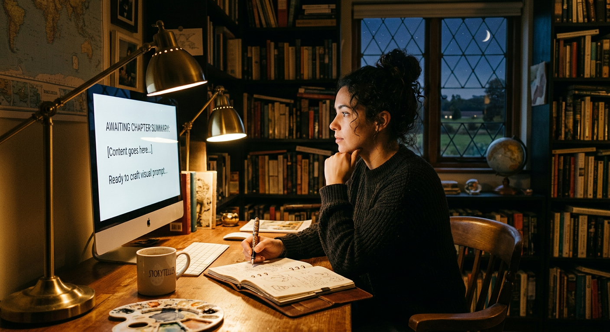
# Book V: The Prisoner of Paradise and the Price of Home
As golden Dawn lifted herself from the bed of Tithonus to scatter light across the heavens, the immortal gods gathered in their high council, and mighty Jove presided among them. There it was that grey-eyed Minerva spoke with bitter eloquence of Ulysses, that man of sorrows still held captive on Calypso's distant isle. She spoke with such passionate irony that one might think kindness itself had become a curse—for what good was a gentle king if his people forgot him utterly? There lay Ulysses, weeping on foreign shores, while wicked men plotted to murder his son Telemachus upon the wine-dark sea.
Jove, unmoved by his daughter's theatrics, reminded her that she herself had set young Telemachus upon his journey and possessed all power necessary to protect him. Then the Thunderer turned to swift Mercury and issued his decree: Ulysses must be freed. Not by ship nor divine escort would he travel, but upon a raft across perilous waters for twenty days until he reached Scheria, land of the godlike Phaeacians, who would honor him and send him home richer than he would have returned from Troy itself.
Mercury bound on his golden sandals and took up his wand of sleep and waking, then flew like a hunting cormorant skimming the waves until he reached that far island. Even a god must pause to marvel at Calypso's dwelling—her cave fragrant with burning cedar, her loom singing with golden thread, her gardens irrigated by four crystalline streams among violets and soft grasses, all sheltered by cypress and alder where owls and hawks nested. Yet Ulysses was not there to enjoy such paradise. He sat upon the shore as always, his eyes fixed upon the barren sea, his heart breaking with longing for home.
When Mercury delivered Jove's command, Calypso trembled with divine fury. How quick the gods were to begrudge a goddess her mortal lover! Had not Dawn's Orion been slain, and Ceres' Iasion struck down by thunderbolts? Yet even her rage could not overcome Jove's will. She found Ulysses upon the beach, that man who slept in her bed by compulsion rather than desire, and told him she would set him free.
Ulysses, shrewd as ever, suspected treachery and demanded an oath. Calypso swore by the waters of Styx itself, then offered him immortality, eternal youth, her own divine beauty—was she not fairer than mortal Penelope? But Ulysses, with gentle firmness, chose his wife, his home, his humanity. He would risk shipwreck and death rather than remain in that gilded cage.
So he built his raft with his own scarred hands, felling twenty trees and fitting them with skill worthy of any shipwright. On the fifth day, Calypso provisioned him and sent him forth with fair winds. For seventeen days he sailed by starlight, keeping the Bear to his left as she had instructed, until the mountains of Phaeacia rose like a shield upon the horizon.
But Neptune, returning from Ethiopia, spotted his old enemy and stirred the sea to murderous fury. Winds from every quarter fell upon Ulysses; waves crashed over him; his mast snapped and his raft scattered like chaff. Only the sea-goddess Ino's enchanted veil and Minerva's intervention preserved him through two days and nights of torment. When at last he reached shore, the surf nearly dashed him to pieces against the rocks, tearing his hands like a polypus ripped from its bed. Yet he found a river mouth, prayed to its guardian spirit, and dragged himself onto blessed earth.
Exhausted beyond speech or breath, Ulysses crawled into a thicket of olive trees, buried himself beneath dry leaves like an ember preserved against the cold, and surrendered to the merciful sleep that Minerva poured upon him—though somewhere nearby, unknown to him, the daughter of a king was about to receive a dream of her own.
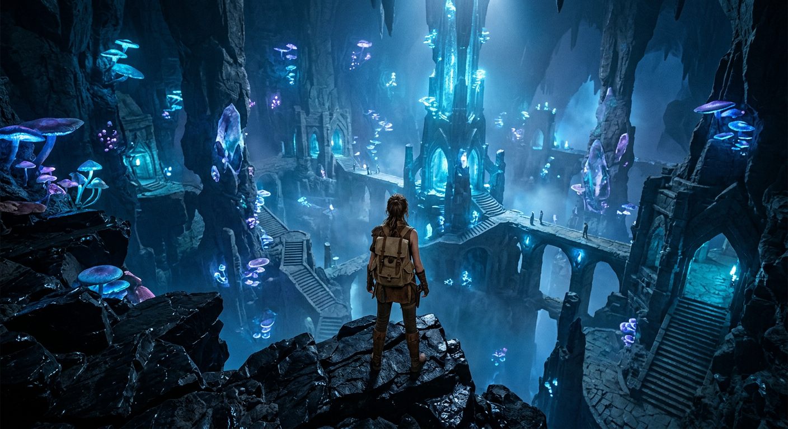
# The Meeting Between Nausicaa and Ulysses
While Ulysses lay wrapped in exhausted slumber beneath the olive thickets, the grey-eyed Minerva turned her swift attention elsewhere, speeding toward the prosperous land of the Phaeacians. These were a people of noble bearing who had once dwelt in Hypereia, neighbours to the brutish Cyclopes, until the lawless giants drove them forth with their plundering. Their wise king Nausithous had led them to Scheria, a land far removed from the troubles of other men, where he built them a city with fine walls and temples and parceled out the fertile ground. Now Nausithous had passed to the shadowy house of Hades, and his son Alcinous, a ruler blessed with heaven's own counsel, held the throne.
Into this kingdom Minerva stole by night, entering the richly adorned chamber where slept Nausicaa, daughter of the king—a maiden as fair as any goddess. The cunning deity took the form of the girl's dearest friend, the daughter of the sea captain Dymas, and drifted to her bedside like a whisper of wind. There she chided the sleeping princess for her carelessness with the household linens, reminding her that marriage would soon be upon her and she must appear in her finest before her many suitors. Would she not rise at dawn and go to the washing cisterns by the river?
When rosy morning came, Nausicaa woke with the dream still vivid upon her mind. She found her father preparing to leave for council and, with a daughter's artful modesty, begged only for a wagon to wash the family's clothing—never speaking directly of the marriage that stirred her heart, though the knowing king understood perfectly well. He gave his blessing, and soon the servants had prepared a sturdy wagon with strong-hoofed mules, provisions, and a golden cruse of oil for anointing.
At the river's edge, the maidens set about their work with vigor, treading the linens clean before spreading them upon the sun-warmed shingle. After their labours and their meal, they cast off their veils and played at ball while Nausicaa sang, the princess standing among her handmaids as Diana stands among the woodland nymphs—taller, fairer, a glory unto herself.
It was then that Minerva set her plan in motion. A wayward throw sent the ball splashing into deep water, and the girls' startled cries pierced the grove where Ulysses lay hidden. He woke at once, his mind turning over what manner of people he had stumbled upon—savage or hospitable, cruel or kind.
Emerging from the brush with only an olive branch to cover his salt-crusted nakedness, Ulysses appeared to the maidens like some wild mountain lion, gaunt with hunger and fierce in aspect. The girls scattered in terror—all save Nausicaa, into whose heart Minerva had breathed courage. The wanderer paused, weighing whether to clasp her knees in supplication or speak from a distance, and wisely chose gentler persuasion. He addressed her as one might address a goddess, comparing her radiance to the slender palm he had once admired at Delos, speaking of his twenty days adrift and his desperate need for clothing and guidance.
Nausicaa answered him with grace and good sense, assuring him that the Phaeacians were a kindly people under Jove's protection who would see to his needs. She commanded her handmaids to feed and clothe the stranger, and when he had bathed himself in the stream, Minerva worked her craft upon him, making him appear taller and more handsome than before, his hair falling in dark curls like hyacinth blossoms.
The princess gazed upon the transformed Ulysses with unconcealed admiration, confessing to her maids that she would wish such a man for a husband. Yet she remained mindful of appearances, instructing Ulysses to follow at a distance until they neared the town, then to wait in Minerva's sacred grove before seeking the palace of Alcinous. Most importantly, she counseled him to seek out her mother Arete, for winning the queen's favour would prove the surest path to securing his passage home.
As the sun descended and the wagon rolled toward the city, Ulysses took his place in the goddess's grove and lifted his voice in prayer, beseeching Minerva to grant him kindness among these strangers—though even now, Neptune's wrath remained unspent, and the road to Ithaca stretched long before him.
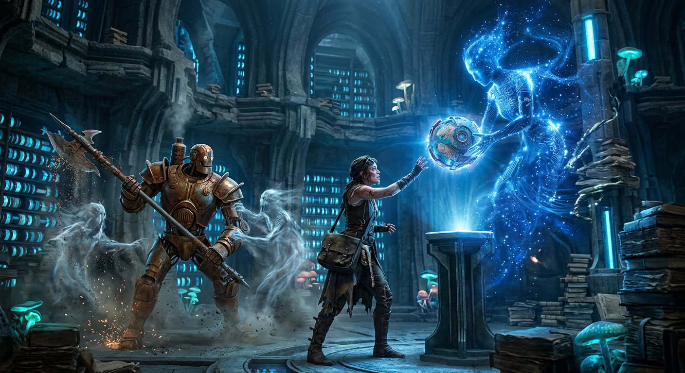
# The Palace of King Alcinous
While Ulysses waited and prayed upon the shore, Nausicaa drove her mule-cart homeward through the gathering dusk. Upon reaching her father's house, she drew up at the gateway, where her brothers—handsome as young gods—came forth to unhitch the mules and carry the fresh-washed linens inside. The princess herself retired to her chambers, where old Eurymedusa of Apeira kindled the fire and prepared her supper. This faithful servant had been brought across the sea long ago, given to King Alcinous as a prize befitting his station, for the Phaeacians obeyed their king as though he were divine.
When Ulysses rose at last to make his way toward the city, Minerva wrapped him in a thick mist, shielding him from the proud Phaeacians who might otherwise accost a stranger with suspicion or contempt. At the town's edge, she appeared before him in the guise of a young girl carrying a water pitcher. Ulysses, speaking with the humble courtesy of a man long acquainted with misfortune, asked her to show him the way to the king's palace. The goddess-in-disguise agreed, warning him to speak to no one and meet no man's eye, for these seafaring people had little love for foreigners. They sailed ships swift as thought itself, blessed by Neptune, but they did not welcome outsiders into their midst.
So Ulysses followed her through streets he could not have navigated alone, invisible within his cloak of divine darkness, marveling at the harbors and vessels, the places of assembly, and the towering walls crowned with palisades. When they reached the palace, Minerva counseled him: seek out Queen Arete first, for she commanded extraordinary respect—from her children, her husband, and all the people, who greeted her like a goddess whenever she walked abroad. Win her favor, the disguised deity urged, and your hope of homecoming becomes real.
With that, Minerva departed for Marathon and the broad streets of Athens, leaving Ulysses alone before the bronze threshold. He stood transfixed, for the palace blazed with splendor like the sun and moon combined. Walls of bronze ran from end to end, capped with blue enamel. Golden doors swung upon silver pillars rising from bronze floors. Gold and silver mastiffs, immortal creations of Vulcan himself, stood eternal guard. Inside, seats lined the walls, draped in fine woven work crafted by the household women, and golden statues of young men held blazing torches aloft to light the feasting nobles. Fifty maidservants worked throughout the house—some grinding golden grain, others weaving linen so tight it would turn oil, their shuttles flickering like aspen leaves in wind.
Beyond the outer court stretched gardens of surpassing beauty: four acres of pear and pomegranate, apple and fig and olive, where fruit ripened perpetually in the soft immortal air, one crop swelling as another fell. Vineyards produced grapes for raisins, for treading, for wine, all at once in endless abundance. Flower beds bloomed year-round, and two streams watered everything—one channeled through the gardens, the other piped beneath the court to serve the townspeople.
Ulysses crossed the threshold at last, still hidden until he knelt before Arete and clasped her knees. In that instant, the miraculous darkness fell away. The assembled nobles fell silent with astonishment. Into that silence, Ulysses poured his supplication: help me home, he begged queen and king alike, for I have suffered long and far from those I love.
The old counselor Echeneus spoke first, gently chiding Alcinous—it was unseemly for a stranger to sit among the ashes. The king responded with gracious haste, raising Ulysses by the hand, seating him in a place of honor, ordering wine mixed and food brought forth. After the drink offerings to Zeus, protector of suppliants, Alcinous promised a feast and escort on the morrow.
When Arete recognized the garments Ulysses wore as work from her own household, she pressed him: who are you, and whence came these clothes? So Ulysses told of Calypso's island, of seven years in gentle captivity, of his raft's destruction and his desperate swim to Phaeacian shores, of Nausicaa's unexpected kindness. Alcinous, moved and impressed, offered his daughter's hand in marriage and a house besides—but swore no one would keep the stranger against his will.
Grateful beyond measure, Ulysses prayed that Zeus would grant Alcinous undying fame for such generosity. Then the maids prepared a bed in the gatehouse, and the weary wanderer, wrapped in red rugs and woollen cloaks, surrendered at last to sleep—while in the inner chambers, Alcinous lay beside his queen, and all the palace settled into darkness before the dawn that would determine whether Ulysses might finally sail for home.
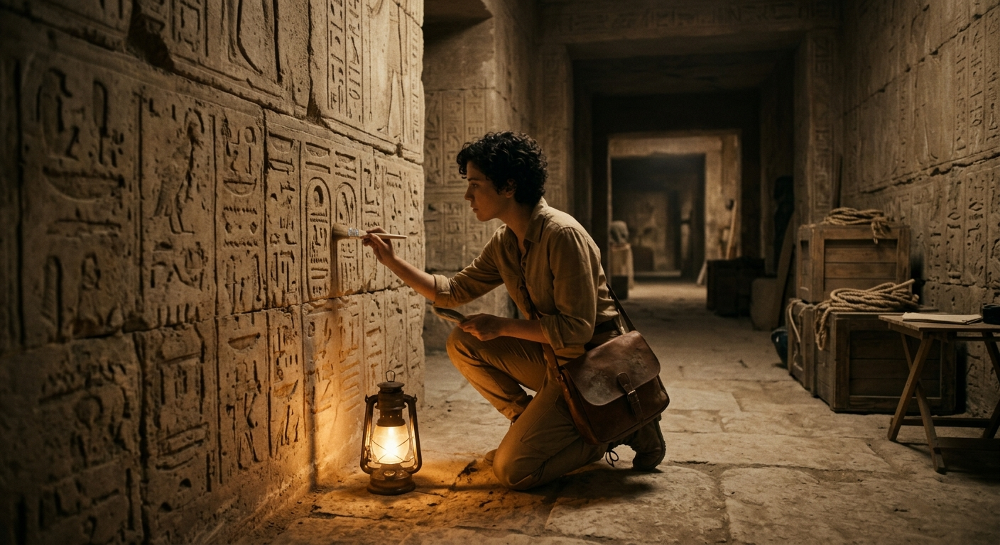
# Book VIII: Banquet in the House of Alcinous—The Games
When rosy-fingered Dawn brought forth the morning light, Alcinous and his mysterious guest rose together and made their way to the Phaeacian assembly near the ships, where they took their seats upon polished stone. Minerva, ever watchful of Ulysses' fortunes, moved through the town in servant's guise, summoning the citizens with whispers that this stranger bore the bearing of an immortal god. She had beautified him about the head and shoulders, lending him a stature and strength beyond his own, so that when the crowds gathered—filling every seat and standing place—they marveled at his appearance.
Alcinous spoke with the authority of a generous king, declaring that this wanderer, whether from East or West, must have his escort home as swiftly as any guest before him. He ordered a fresh ship drawn into the sea and manned with fifty-two of their finest young sailors, while he bade the aldermen join him in feasting their visitor. The blind bard Demodocus would sing for them, he declared, for there was no minstrel his equal in all the world.
The preparations proceeded with magnificent abundance—a dozen sheep, eight pigs, two oxen slaughtered and dressed for the banquet. When Demodocus was led in, that singer whom the Muse had blessed with divine song yet cursed with sightless eyes, they set him in a place of honor with his lyre hung upon a peg within reach of his hands. The company feasted well, and when appetites were satisfied, the bard sang of heroes—particularly the famous quarrel between Ulysses and Achilles at Troy. At this, Ulysses drew his purple mantle over his face and wept in secret shame, though none perceived his grief save Alcinous, who heard his heavy sighing and mercifully called for games instead of further song.
To the athletic grounds the multitude followed, where the finest Phaeacian youth competed in foot races, wrestling, jumping, and discus. When Laodamas, the king's son, invited Ulysses to participate, the weary traveler declined, his mind set on sorrows rather than sport. But Euryalus spoke with insolent contempt, suggesting the stranger was merely a grasping merchant with nothing of the athlete about him.
This insult stirred Ulysses to magnificent fury. He seized a disc far heavier than any the Phaeacians used and hurled it with such force that it hummed through the air and flew beyond all other marks. Minerva herself marked where it fell, declaring that even a blind man could find this throw, so far did it surpass the rest. Ulysses then proclaimed his mastery in boxing, wrestling, archery, and every athletic pursuit, sparing only Laodamas from challenge, for one should never compete against the family of one's host.
Alcinous, pleased with this display, turned the company toward gentler entertainments—dancing and song. Demodocus sang now the comic tale of Mars and Venus caught in Vulcan's cunning chains, and the gods' uproarious laughter at their predicament. The Phaeacians delighted in the tale, and afterward the king's sons performed such nimble dancing with a red ball that Ulysses declared them the finest dancers in the world.
This praise moved Alcinous to lavish generosity. Each of the twelve chief men contributed cloaks, shirts, and gold, while Euryalus offered his bronze sword with silver hilt as formal apology. The treasures were gathered and entrusted to Queen Arete, who packed them in a magnificent chest while Ulysses bathed in warmth he had not known since leaving Calypso's isle.
At supper, Ulysses himself honored Demodocus with choice cuts of pork, praising the sacred gift of bards. Then he asked the singer to tell of the wooden horse and the fall of Troy. As Demodocus sang of Ulysses raging like Mars through the burning city, the hero wept openly—wept as a woman weeps throwing herself upon her slain husband's body. This time Alcinous could not ignore such grief.
The king silenced the music and spoke directly to his guest: the time for concealment had ended; he must reveal his name, his homeland, and the source of sorrows that made him weep at songs of Troy.
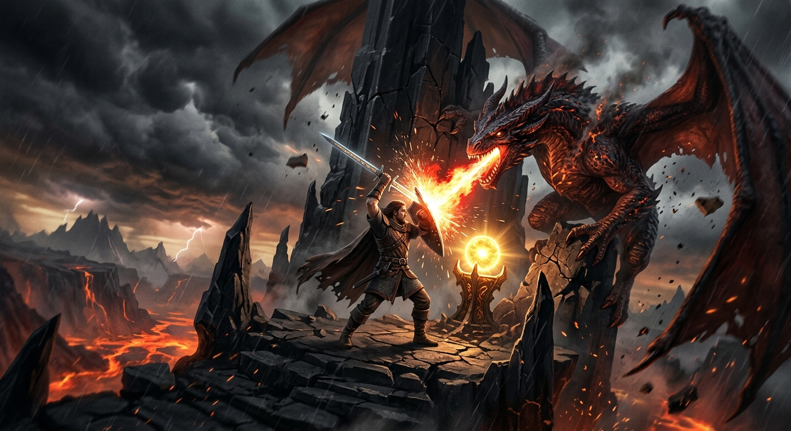
# Book IX: The Wanderer's Tale Begins
In the great hall of King Alcinous, where the divine voice of the bard had just fallen silent, Ulysses at last rose to speak. He acknowledged the sweetness of such entertainment—the ordered guests, the laden tables, the cup-bearer moving among them—yet confessed that the king's request had stirred within him memories weighted with sorrow. Where to begin, when the hand of heaven had pressed so heavily upon his fate?
He would start, then, with his name, that they might know the man before them and perhaps, should he survive his griefs, become his guests in turn. He was Ulysses, son of Laertes, famed throughout the world for his cunning, a man whose home lay in rugged Ithaca beneath the forested heights of Mount Neritum. Though goddesses had sought to keep him—both Calypso in her cave and the enchantress Circe on her island—neither could sway his heart from what he loved most: his own country and his own people. No splendor of a foreign dwelling could supplant that longing.
And so he began the tale of his wanderings. Setting sail from Troy, the winds first drove him to Ismarus, city of the Cicons, where his men sacked the town and divided the spoils. Yet when Ulysses urged swift departure, his crew foolishly lingered, drinking and feasting on the shore. By morning, the Cicons had summoned their inland kinsmen—warriors skilled in chariot and foot combat—who fell upon the Greeks like summer leaves. By sunset, six men from every ship lay dead, and only flight saved the rest.
They sailed on, hearts heavy with mourning, until Zeus unleashed a hurricane that tore their sails to tatters and drove them blindly across the waters. Nine days the foul winds carried them before they reached the land of the Lotus-eaters. There, those who tasted the honeyed lotus forgot all desire for home, weeping when Ulysses dragged them back to the ships and bound them beneath the rowing benches.
Next they came to the country of the Cyclopes—lawless giants who neither planted nor plowed, who lived without assemblies or regard for neighbors, each ruling his own mountain cave. Nearby lay a fertile island, lush with wild goats and untouched meadows, yet the Cyclopes, having no ships, had never claimed it. Here Ulysses and his men landed by night, feasting on goat-meat and gazing across the water at the smoke of Cyclopean fires.
Curiosity compelled Ulysses to explore further. Taking twelve of his best men and a skin of potent black wine—a gift from Maron, priest of Apollo—he rowed to the mainland and discovered a vast cave strewn with cheeses and penned lambs. His men begged him to steal provisions and flee, but Ulysses wished to meet the cave's master. That master proved to be Polyphemus, a monster vast as a mountain crag, who sealed the cave with a stone no mortal force could shift.
When the Cyclops discovered them, he showed no reverence for Zeus or the sacred laws of hospitality. Instead, he snatched up two men and devoured them raw, then slept. Ulysses dared not kill him with a sword, for they would have remained trapped forever behind that immovable stone. By morning, after Polyphemus had eaten two more, Ulysses conceived his plan: a massive olive-wood stake, sharpened and hardened in the fire, and the potent wine to cloud the giant's wits.
That evening, Ulysses plied Polyphemus with bowl after bowl, giving his name as "Noman." When the drunken giant collapsed, Ulysses and four chosen companions drove the glowing stake into his single eye. The monster's screams brought neighboring Cyclopes to ask what troubled him, but when Polyphemus cried that "Noman" was killing him, they departed, assuming madness or divine affliction.
At dawn, the blinded giant sat in the doorway, feeling the backs of his sheep as they passed. But Ulysses had bound his men beneath the rams' bellies, escaping himself by clinging to the fleece of the finest ram. Once aboard ship and safely at sea, Ulysses could not resist taunting his vanquished enemy, revealing his true name despite his crew's desperate warnings. Polyphemus, recognizing the fulfillment of an ancient prophecy, prayed to his father Neptune for vengeance—that Ulysses might never reach home, or if he did, arrive late and broken, finding only trouble awaiting him.
Neptune heard that prayer, and though the Greeks escaped the hurled boulders and rejoined their fleet, the curse now clung to them as they sailed onward into unknown waters, their brief triumph shadowed by griefs yet to come.
# Book X: A Voyage of Sorrows and Sorcery
From the halls of Aeolus, keeper of the winds, to the enchanted courts of the sorceress Circe, Odysseus now recounts to his hosts the bitter lessons of folly and the strange mercies that befell him and his dwindling crew.
They had come first to that floating island where Aeolus dwelt in splendor with his wife and twelve children—six sons wed to six daughters—all feasting eternally amid the savory smoke of roasting meats. For a full month Odysseus enjoyed the wind-master's hospitality, answering every question about Troy and the Argive fleet. When at last he begged leave to continue homeward, Aeolus proved generous beyond measure: he flayed a great ox-hide and bound within it all the howling winds, sealing the bag with silver thread so that only the favorable West Wind might blow free and carry the ships toward Ithaca.
Nine days they sailed, and on the tenth, Odysseus spied his homeland so near he could see the stubble fires burning in the fields. But exhaustion betrayed him—he who had never released the rudder fell into a light sleep, and in that fateful slumber, his men, consumed by envy and suspicion, convinced themselves their captain hoarded treasure in that mysterious bag. They loosed the silver binding. The imprisoned winds shrieked forth in fury, driving the weeping sailors back across the waters they had crossed, depositing them once more upon Aeolus's shore. This time, however, no welcome awaited them. "Vilest of mankind," thundered the wind-god, "him whom heaven hates will I in no wise help. Be off, for you come here as one abhorred of heaven."
With no wind to fill their sails, the men rowed six days through dead calm until they reached the harbor of Telepylus, stronghold of the Laestrygonians. Here Odysseus's caution alone saved him—while his captains moored their vessels within the cliff-locked harbor, he kept his own ship at the outer point. The decision proved wise, for the Laestrygonians were giants and cannibals. When the monstrous Antiphates and his ogre-kin discovered the Greeks, they hurled boulders from the cliffs, spearing men like fish to devour at their leisure. Only Odysseus's ship escaped, its crew rowing desperately while their comrades' death-cries echoed behind them.
Grieving but alive, they came at last to Aeaea, island of the goddess Circe. After two days of exhausted rest, Odysseus divided his remaining men and sent Eurylochus with twenty-two sailors to explore the smoke rising from the forest. They found Circe's stone house surrounded by wolves and lions—bewitched creatures who fawned like hounds upon the visitors. Inside, the goddess sang at her loom, and when she welcomed the men with honeyed wine and cheese, all but suspicious Eurylochus followed her within. She drugged them and struck them with her wand, transforming them into swine who grunted in her sties while retaining their human minds.
When Eurylochus brought this terrible news, Odysseus set out alone to rescue his men. The god Hermes intercepted him, offering the protective herb called moly—black-rooted with milk-white flower—and instruction: resist Circe's magic, threaten her with his sword, and exact her oath before accepting her bed. All unfolded as Hermes foretold. The goddess, astonished that her drugs had failed, recognized the prophesied hero and submitted to his demands, restoring his men to human form younger and fairer than before.
For a full year they lingered there in comfort, until Odysseus's crew reminded him of home. But when he besought Circe for guidance, she delivered news that turned his heart to ice: before he could sail for Ithaca, he must first journey to the very house of Hades to consult the shade of the blind prophet Teiresias.
With instructions for summoning the dead now branded in his mind, Odysseus roused his men for this darkest of voyages—though in the confusion, young Elpenor fell drunkenly from Circe's roof, his neck breaking, his soul plunging ahead of them into that realm of shadows where they all must now follow.
# The Visit to the Dead
With heavy hearts and tear-stained faces, Odysseus and his men drew their ship down to the shore and set forth upon the waters, bearing the sacrificial sheep Circe had commanded them to take. The cunning goddess sent them a fair wind that filled their sails and carried them steadily onward, requiring nothing of them but to tend the ship's gear while the helmsman held their course. All through the day they sailed, and when darkness fell across the earth, they reached the deep waters of the river Oceanus, arriving at last in the land of the Cimmerians—those wretched souls who dwell in perpetual mist and shadow, never touched by the sun's rays whether at dawn or dusk, living out their days in one endless, melancholy night.
There upon that dreary shore, Odysseus dug a trench and made his offerings to the dead: first honey mixed with milk, then wine, then water, with white barley meal scattered over all. He prayed to the feckless ghosts and promised them proper sacrifice upon his return to Ithaca, pledging a barren heifer and a black sheep especially for the prophet Teiresias. When he cut the throats of the two sheep and let their blood flow into the trench, the spirits came swarming up from Erebus—brides and young men, old warriors worn by toil, maidens crossed in love, and soldiers still bearing their battle-stained armor. They flitted about with strange screaming sounds that turned Odysseus pale with fear, yet he held his ground with sword drawn, permitting none to drink until Teiresias should speak.
First came the ghost of Elpenor, his unlucky comrade who had fallen drunkenly from Circe's roof and broken his neck. He begged Odysseus to return and give him proper burial, lest he bring heaven's anger upon them all. Then came the shade of Anticlea, Odysseus's own mother, whom he had left alive when he sailed for Troy—yet even her he would not permit near the blood until the prophet had spoken.
Teiresias appeared with his golden scepter and delivered his prophecy: Neptune still nursed his grudge for the blinding of his son, and the journey home would be hard. Yet if Odysseus and his men could restrain themselves from harming the sacred cattle of the sun god on the island of Thrinacia, they might yet reach Ithaca. Should they harm those flocks, destruction would follow. The prophet spoke also of the suitors plaguing Odysseus's house, of revenge to come, and of a peaceful death in old age after one final journey to a land where men knew nothing of the sea.
When Teiresias departed, Odysseus at last allowed his mother to taste the blood. She told him of Penelope's faithfulness, of Telemachus holding the estate, and of his father Laertes wasting away in grief. Most painfully, she revealed that her own death had come not from illness but from longing for her absent son. Three times Odysseus tried to embrace her, and three times she slipped through his arms like a shadow or a dream.
The parade of famous women followed—Tyro, Antiope, Alcmena, Epicaste, and many others—each with her own tale of gods and heroes. Then came Agamemnon's bitter ghost, recounting his murder at the hands of his treacherous wife Clytemnestra, warning Odysseus never to trust women fully. Achilles appeared next, declaring he would rather be a poor man's servant in the sunlight than king among the dead, yet striding away through fields of asphodel with joy when he learned of his son's valor. Even sullen Ajax came near, though he refused to speak, still nursing his grudge over the contest for Achilles's armor.
At last, as thousands of ghosts pressed close with appalling cries, Odysseus grew fearful that Proserpine might send forth the dreaded Gorgon. He hastened back to his ship, and his men rowed out upon the river Oceanus until a fair wind rose to carry them onward—toward Circe's island once more, where new warnings and fresh trials awaited them.
# Summary of Book XII
After escaping the shadowed realm of Oceanus and the house of Hades, Odysseus and his men returned at last to the Aeaean island, where rosy-fingered Dawn still painted the sky each morning as she does in all the living world. There they gave proper burial rites to their fallen companion Elpenor, raising a cairn upon the shore and fixing his oar atop it—a sailor's monument for a sailor's death.
The goddess Circe came to them swiftly, bearing bread and meat and wine, and she praised them for the bold feat of descending alive into death's domain. Yet her hospitality carried weight, for she drew Odysseus aside to speak of the trials that lay ahead. First would come the Sirens, those enchantresses whose voices wove death into melody. She instructed him to seal his men's ears with wax and, should he wish to hear their song himself, to be bound fast to the mast—bound tighter still should he beg for release.
Beyond them waited a crueler choice: the Wandering Rocks where even the gods' doves perished, or the narrow strait guarded by twin horrors. Scylla lurked in her high cave, a creature of twelve writhing feet and six serpentine necks, each crowned with a head of triple-rowed teeth—a monster who would claim six men no matter how swiftly they passed. Below her, Charybdis swallowed the sea itself three times daily, a churning maw that would devour ship and crew entire. Better to lose six than all, Circe warned. And she spoke too of Thrinacia, the Sun-god's island, where sacred cattle grazed untouched by time—cattle that must never be harmed, lest destruction follow.
Odysseus shared Circe's warnings with his men, and they sailed forth under fair winds. When the Sirens' island appeared and the sea fell still, the crew rowed on with waxed ears while their captain stood lashed to the mast, straining against his bonds as those honeyed voices promised wisdom and glory. His men only bound him tighter, rowing past until the song faded.
Then came the roaring strait. Charybdis churned below like a cauldron over flame while Odysseus watched for Scylla above—but she struck too swiftly. Six of his finest men were snatched screaming into the air, calling his name as the monster devoured them at her cave's mouth. It was, Odysseus confessed, the most sickening sight of all his voyages.
They reached Thrinacia at last, and though Odysseus pleaded with his exhausted crew to sail past, Eurylochus spoke for them all—they would rest one night. But one night stretched into a month as contrary winds imprisoned them. When provisions failed and hunger gnawed, Eurylochus led the men to slaughter the sacred cattle while their captain slept. Odysseus woke to the smell of roasting meat and knew they were doomed. Strange portents followed—the hides crawling, the flesh lowing upon the spits—but the feasting continued for six days.
On the seventh, they sailed—and Zeus answered the Sun-god's fury. Lightning shattered the ship, casting every man into the churning sea. Odysseus alone survived, clinging to mast and keel until currents dragged him back through the strait, where he hung from Charybdis's overhanging fig tree like a bat until his makeshift raft emerged from the whirlpool below.
For nine days he drifted alone upon the empty sea, until at last the gods carried him to Ogygia, where Calypso took him in—but that tale he had already told, and he would not repeat himself to the Phaeacians who had shown him such kindness.
Now his story complete, Odysseus fell silent, leaving only the question of what lay ahead—and whether the Phaeacians would grant him the homeward passage he so desperately sought.
# Summary of Book XIII: Ulysses Leaves Scheria and Returns to Ithaca
The spell of Ulysses' tale hung thick as incense in the covered cloister, and not a soul among the Phaeacians dared break the sacred silence—until King Alcinous, ever the gracious host, spoke words of promise and plenty. He assured Ulysses that his homecoming was now certain, and turned to his nobles with a proposition: let each man give a tripod and cauldron more, that their guest might depart laden with such wealth as would make even the spoils of Troy seem modest by comparison. The cost would be spread among the people, for no single purse should bear so generous a gift.
When rosy-fingered Dawn touched the sky, the Phaeacians made haste to the ship, stowing bronze cauldrons beneath the benches with such care that nothing might break loose and trouble the oarsmen. Then came the feasting—a bull sacrificed to almighty Jove, steaks sizzling on the fire—while Demodocus sang for the gathered company. But Ulysses sat apart in spirit, his eyes forever turning toward the sun, willing it downward to the sea's edge. Like a ploughman who has spent the long day behind his oxen and thinks only of supper, so did the wanderer hunger for departure.
At last the moment came. Ulysses rose and spoke his farewells with the formal grace of kings, blessing Alcinous, his people, and their wives and children. He placed a double cup in Queen Arete's hands and took his leave with words both tender and prophetic—acknowledging that age and death, that common lot of mortals, would one day claim even her. The queen sent maidservants bearing fresh garments, a strong-box, and provisions for the journey.
Upon the ship, the crew spread a rug and linen sheet at the stern, and there Ulysses lay down without a word. As the hawser was loosed and the oars bit into the dark water, sleep fell upon him—deep, sweet, and deathlike. The vessel bounded forward like a chariot team feeling the whip, her prow curving proud as a stallion's neck, and not even a falcon could have matched her speed. So she carried the man as cunning as the gods, now peacefully forgetful of every sorrow.
When the herald-star of dawn appeared, the ship drew near Ithaca's shores—into the sheltered haven of old Phorcys, where an ancient olive stands sentinel and a mysterious cavern sacred to the Naiads opens its twin mouths to mortals and gods alike. The crew lifted sleeping Ulysses onto the sand, heaped his treasures beneath the olive tree, and departed swiftly for home.
But Neptune had not forgotten his grievance. He complained to Jove that these Phaeacians—his own descendants—had mocked his power by ferrying Ulysses home unscathed. Jove gave him leave to act, and so the sea-god turned the returning ship to stone before the astonished eyes of its people, rooting it fast in the harbor. Alcinous, remembering his father's prophecy, commanded sacrifice to appease Neptune's wrath.
Meanwhile, Ulysses woke upon his native soil yet knew it not, for Minerva had wrapped the land in mist. He wandered the shore in despair until the goddess appeared—first as a shepherd youth, then revealing her true radiant form. She smiled at his instinctive lies, for she knew him better than any mortal knew himself. Together they hid his treasures in the sacred cave, and beneath the great olive they plotted vengeance against the suitors who had plagued his house.
With a touch of her wand, Minerva transformed him into a withered beggar, and thus disguised, Ulysses prepared to reclaim all that was his—beginning with a visit to his faithful swineherd, while the goddess herself departed for Sparta to bring Telemachus home.
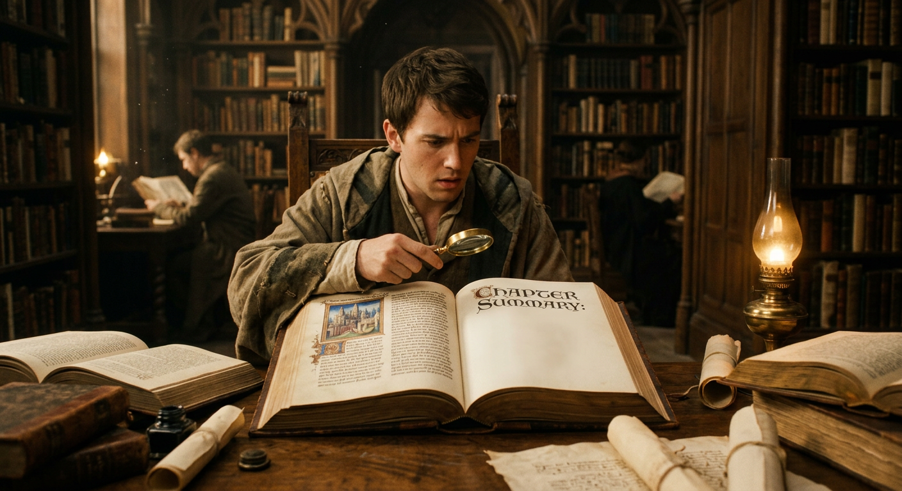
# Book XIV: Ulysses in the Hut with Eumaeus
Leaving the haven behind, Ulysses climbed the rough woodland track over the mountain's crest until he came to the place Minerva had described—the dwelling of Eumaeus, the faithful swineherd who had served his absent master more thriftily than any other servant in the household. There sat Eumaeus before his hut, surrounded by the yards he had built with his own hands during Ulysses' long absence, gathering stones from the ground and fencing the enclosure with thorn bushes, all without troubling Penelope or old Laertes. Within the stout oaken posts lay twelve sties holding fifty breeding sows each, while outside roamed the boar pigs—three hundred and sixty in number, though their ranks had thinned considerably, for the suitors demanded the finest specimens sent to them continually, devouring them without shame or scruple.
When the swineherd's four fierce hounds caught sight of the stranger approaching, they flew at him in a fury of barking. Ulysses, cunning as ever, dropped to the ground and released his staff, yet the dogs would have torn him to pieces in his own homestead had Eumaeus not rushed through the gate, driving them off with stones and shouts. The swineherd chided the old wanderer for nearly getting himself killed, then spoke of his own sorrows—how he had lost the best of masters and now fed swine for others to feast upon while his lord, if still alive, starved in some distant land.
Inside the hut, Eumaeus prepared a generous welcome, spreading rushes thick upon the floor and covering them with the shaggy chamois skin that served as his own bed. When Ulysses blessed him for such kindness, the swineherd replied that all strangers and beggars come from Jove, and that even a poorer man than this would deserve hospitality. He spoke bitterly of Helen, whose beauty had been the death of many good men and had drawn his master away to Troy, then prepared a meal of young pigs, sacrificing and roasting them while cursing the suitors who consumed the fat boars and drained Ulysses' wine without conscience.
As they ate, Eumaeus catalogued his master's vast wealth—twelve herds of cattle, twelve flocks of sheep, twelve droves of pigs on the mainland, and spreading herds of goats both there and on Ithaca's far end—all being devoured by men who believed Ulysses dead and gone. Ulysses listened silently, eating ravenously while brooding revenge in his heart.
When the disguised king hinted that he might have news of Ulysses, Eumaeus grew skeptical, explaining how wanderers constantly arrived with false tales, hoping for gifts of clothing. He believed his master's bones lay buried on some foreign shore, torn by wolves and birds. Yet Ulysses swore solemnly that his host's lord would return before the moon changed—swore by Jove and by the hearth at which he sat—but the faithful servant refused to believe, though he revealed his fears for young Telemachus, who had gone seeking news of his father while suitors lay in ambush for his return.
Ulysses then spun an elaborate tale of Cretan birth, of commanding ships to Troy alongside Idomeneus, of disastrous raids on Egypt, years of captivity, betrayal by Phoenician traders, shipwreck, and rescue by Thesprotian King Pheidon, who had supposedly hosted Ulysses himself and shown the stranger the hero's accumulated treasure. Still Eumaeus would not credit the story, though he treated his guest kindly for Jove's sake.
As night fell stormy and moonless, the swineherds returned with their charges, and Eumaeus sacrificed a fine five-year boar, offering proper portions to the gods before serving his guest. After supper, Ulysses told a clever tale of freezing outside Troy's walls until he tricked a soldier out of his cloak—a hint the swineherd understood, providing his guest with warm coverings for the night while he himself went out to sleep among his pigs, guarding his absent master's property with sword, heavy cloak, and javelin ready at hand.
Thus the king rested under his own servant's roof, unknown and unrecognized, as the storm raged through the darkness around them—though dawn would bring new trials and new deceptions before father could find son once more.
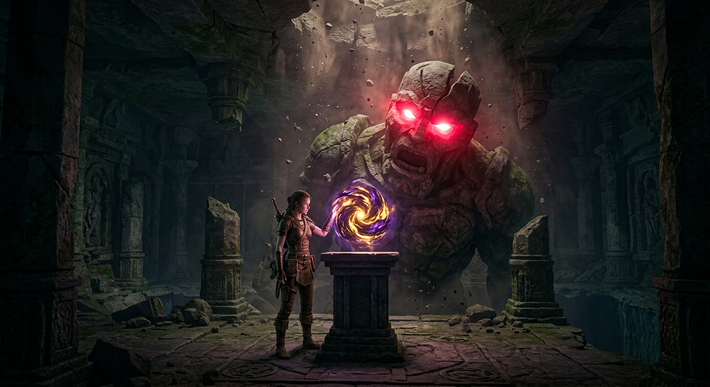
# Book XV: The Return of Telemachus
Minerva descended upon the fair city of Lacedaemon in the depths of night, seeking the son of Ulysses where he lay in the forecourt of Menelaus's palace. While Pisistratus slumbered peacefully beside him, Telemachus could find no rest, his mind churning with thoughts of his long-absent father. The goddess drew close and spoke urgently: he must return home at once, for the suitors were devouring his wealth, and already Penelope's kinsmen pressed her toward marriage with Eurymachus, who had outdone all others in his gifts. More gravely still, the chief suitors lay in ambush in the strait between Ithaca and Samos, determined to murder him before he could reach home. Yet Minerva counseled him not to fear—rather, he should sail by night, keep far from the islands, and upon reaching Ithaca, proceed not to his own house but straight to the hut of the faithful swineherd Eumaeus.
At dawn, Telemachus roused his companion and begged leave of Menelaus, who proved the model of gracious hospitality in letting his guest depart. The great king descended to his treasure chamber, selecting a magnificent mixing bowl of pure silver rimmed with gold—the work of Vulcan himself. Helen too came bearing gifts: a robe of her own making, glittering like a star, meant for Telemachus's future bride. As the young men took their leave, an eagle swept past clutching a white goose, and Helen, ever quick in matters of prophecy, proclaimed it an omen of Ulysses's return and coming vengeance.
Through Pherae the travelers rode and on to Pylos, where Telemachus entreated Pisistratus to let him slip away to his ship, knowing old Nestor would never willingly release him. There, as he made offerings to Minerva, a stranger approached—Theoclymenus, a seer of noble lineage fleeing Argos for having slain a kinsman. This fugitive prophet begged passage to Ithaca, and Telemachus, showing his father's generous spirit, welcomed him aboard.
Meanwhile, in the humble hut on Ithaca, Ulysses tested the loyalty of Eumaeus by proposing to leave and beg in the city among the suitors. The swineherd's alarm was immediate and protective—he warned of the suitors' savage pride and urged his guest to remain until Telemachus returned. Their conversation deepened into the long night as Eumaeus shared his own sorrowful history: how he had been born the son of a king on the island of Syra, only to be stolen away by a treacherous Phoenician nursemaid and sold into slavery. Yet even in bondage, he had found kindness in the house of Laertes and Anticleia, the latter having raised him alongside her own daughter before grief over Ulysses consumed her utterly.
As dawn broke over Ithaca, Telemachus's ship made harbor. The young prince sent his vessel onward to the city while he struck out alone toward the swine-pens, pausing only to arrange hospitality for Theoclymenus with his friend Piraeus. Another omen appeared—a hawk tearing at a dove—and the seer proclaimed that Telemachus's house would remain supreme in Ithaca. With a stout bronze-tipped spear in hand, the son strode toward the homestead where dwelt the excellent swineherd, not knowing that within that humble hut, a far greater reunion awaited him than any he could have imagined.
# Book XVI: The Reunion
At dawn's first light, while the swineherd's men drove their charges out to pasture, Ulysses and Eumaeus kindled their fire and set about preparing the morning meal. Then came footsteps across the yard, and the dogs—those faithful sentinels who would bay at any stranger—made no sound of warning but wagged and whined with joy. Ulysses marked this well and spoke of it to Eumaeus, but before the swineherd could answer, there stood Telemachus in the doorway.
Such was Eumaeus's gladness that the mixing bowls fell from his hands and clattered upon the ground. He rushed to the young prince, kissing his head and his eyes, weeping as though receiving back a son long given up for dead. For in truth, when Telemachus had sailed for Pylos, the old servant had feared he would never look upon that face again.
The three men shared their meal together—the father still hidden behind his beggar's rags, the son ignorant of who sat before him. When Telemachus inquired about the stranger, Eumaeus told what little he knew: a Cretan wanderer, a man who had suffered much, now seeking shelter as a suppliant. And Telemachus, his heart heavy with the troubles that plagued his house, confessed he could offer no true hospitality. The suitors had made his home a den of wolves; he was young, alone, without brothers to stand beside him. The house of Laertes had ever been a line of only sons, and now that slender thread hung by a knife's edge.
Ulysses listened, and his blood stirred. He spoke boldly of what any man of honour would do—he would sooner die fighting in his own hall than suffer such disgrace day after day. But still he kept his secret.
Then Eumaeus departed for the city to bring word to Penelope that her son had returned safely. And no sooner had he gone beyond sight than Athena appeared—visible to Ulysses alone, for the gods reveal themselves as they choose. She bade him cast off his disguise and make himself known to his son.
With a touch of her golden wand, the goddess transformed the wretched beggar. His rags became fine garments, his weathered skin grew smooth, his beard darkened, and he stood tall and commanding. Telemachus recoiled in fear, certain he beheld some god who had descended to test him.
"I am no god," Ulysses said. "I am your father."
But Telemachus would not believe it—could not believe it. No mortal could change his form so utterly. Only when Ulysses spoke of Athena's power, of twenty years of wandering, of the long road home, did his son at last accept the truth. Then they fell into each other's arms and wept together, father and son, their cries rising like the shrieks of eagles whose young have been stolen from the nest.
When at last their grief gave way to purpose, they began to plot. Ulysses demanded a reckoning of the suitors—their names, their numbers, their strength. Telemachus told him: more than a hundred men from the surrounding islands, all of them armed, all of them dangerous. But Ulysses was undaunted. With Athena and Zeus beside them, what need had they of mortal allies?
He laid out his plan with the cunning that had served him at Troy: he would return to his own hall disguised once more as a beggar. Telemachus must endure watching him suffer insults and blows, must show no sign of recognition. When the moment came, Athena would give the signal, and they would remove the weapons from the hall. Then, and only then, would they strike.
Meanwhile, in the city, the suitors learned that their ambush had failed. Telemachus had slipped past them and returned alive. Antinous urged them to murder him before he could rally the people against them, but Amphinomus counselled patience—let them first seek the will of the gods. Penelope, having learned of the plot from a loyal servant, descended to confront them with bitter words for their treachery. Yet their honeyed promises meant nothing; even as Eurymachus swore to protect Telemachus, his heart harboured thoughts of murder.
That evening, Athena restored Ulysses to his beggar's guise before Eumaeus returned. The three men shared their supper in the humble hut, and when the meal was done, they lay down to rest—though for Ulysses, sleep must have come slowly, his mind turning over the bloody work that lay ahead.
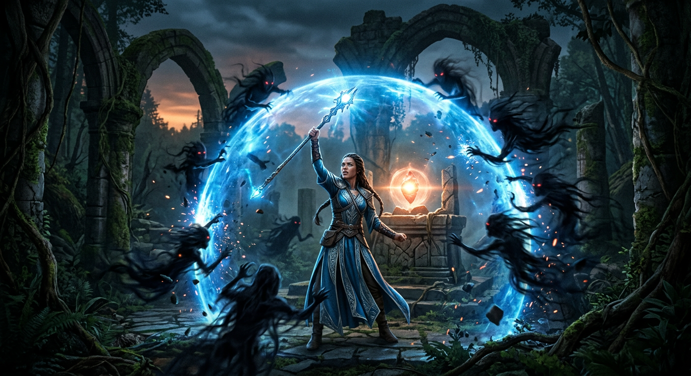
As rosy-fingered Dawn touched the sky, Telemachus bound his sandals and took up his spear, resolved to journey into the city and show himself at last to his grieving mother. To the swineherd Eumaeus he spoke with seeming indifference about the stranger in their midst—that unfortunate beggar could make his own way to town and seek bread from whoever might spare it. Telemachus claimed troubles enough without shouldering another's burden, though his words masked deeper purpose. Ulysses, still cloaked in the guise of a wretched wanderer, agreed readily enough; a beggar fares better where crowds gather, and besides, the morning frost bit through his threadbare rags.
So Telemachus strode homeward, his heart brooding revenge upon the suitors who had so long feasted in his halls. There nurse Euryclea spotted him first and burst into tears of joy, followed by the other maids who covered him with kisses. Then came Penelope herself, beautiful as Diana or Venus, weeping as she embraced her son and pressed her lips to his forehead and eyes, calling him the light of her life. She had despaired of ever seeing him again after he slipped away to Pylos without her blessing. But Telemachus bade her wash her face and make offerings to the gods, promising that if Zeus granted them vengeance, all would be made right.
At the assembly place, Telemachus joined the seer Theoclymenus, whom Piraeus had escorted through town. The young prince spoke candidly of uncertain fates—should the suitors murder him, better that Piraeus keep the gifts of Menelaus than let those scoundrels divide the spoils. Later, before Penelope, Telemachus recounted his journey: how Nestor had welcomed him like a long-lost son, how Menelaus had compared the suitors to fawns left foolishly in a lion's den, and how the old man of the sea had revealed Ulysses stranded on Calypso's island. Theoclymenus then proclaimed with prophetic certainty that Ulysses himself was already on Ithaca, moving unseen, preparing a day of reckoning.
Meanwhile, Ulysses and Eumaeus made their slow way toward town, the disguised king leaning on a staff, his wallet slung over his shoulder. At the fountain where citizens drew water, the goatherd Melanthius overtook them and spewed vile insults, kicking Ulysses on the hip. Though fury burned within him, Ulysses stood firm and silent, biding his time. But it was the old dog Argos who pierced through all disguise—lying neglected on a dung heap, flea-ridden and forgotten, the hound raised his ears at his master's approach, wagged his tail one final time, and died, having seen at last what he had waited twenty years to see.
Inside the great hall, Ulysses took his place on the threshold like any common beggar and went among the suitors with outstretched hands. Most gave something; Antinous gave only mockery and violence, hurling a footstool that struck Ulysses on the shoulder. The blow did not stagger him—he stood solid as rock—but he shook his head in silence, brooding on the revenge to come. When word of this cruelty reached Penelope, she cursed Antinous and sent for the stranger, eager to learn what he might know of her husband.
But Ulysses, through Eumaeus, asked her to wait until nightfall, when the suitors' raucous presence would not threaten their conversation—and as Penelope spoke of this, Telemachus sneezed so mightily that the whole house rang with the sound, an omen she took to mean not one suitor would escape alive.
# Book XVIII: A Summary
A wretched vagabond named Arnaeus—though the young men called him Irus for his errand-running ways—came swaggering into the house of Ulysses, notorious throughout Ithaca as an incorrigible glutton and drunkard. Though he possessed no real strength, his hulking frame made him bold enough to insult the disguised hero and demand he leave the doorway. Ulysses, maintaining his beggar's guise, warned the fool not to speak so freely of fighting, lest an old man bloody his mouth and chest. But Irus would not be deterred, and the two men fell to quarreling until Antinous, delighted by this sport, urged them to fight properly, offering the victor his pick of goats' paunches set aside for supper and exclusive begging rights to the hall.
Ulysses, playing his part masterfully, begged the suitors to swear none would strike him unfairly to favor his opponent. When he girded his rags about his loins and revealed his stalwart thighs, broad chest, and mighty arms—made stronger still by Minerva's invisible hand—the suitors marveled and predicted Irus's doom. The terrified beggar had to be forced into the fight, trembling like a leaf, while Antinous threatened to ship him off to the savage king Echetus, who would cut off his nose and ears. When the blows came, Ulysses restrained himself, dealing only enough force to break the bones in Irus's skull beneath his ear. The wretch fell groaning in the dust, and Ulysses dragged him by the foot to the gate-house, propping him against the wall with his staff, warning him never again to play king of the beggars.
Among the laughing suitors, Amphinomus alone showed the stranger kindness, pledging him wine and wishing him better fortune. Ulysses, moved by this decency, offered him a veiled warning—speaking of how man's vanity blinds him to coming sorrow, how the suitors wasted another man's estate, and how that man would surely return, bringing blood with him. He urged Amphinomus to leave before that day of reckoning. Yet even this gentle soul could not escape the doom Minerva had appointed; he would fall by Telemachus's hand.
Then Minerva turned her attention to Penelope, stirring within her a desire to show herself to the suitors. The goddess sent her into sweet slumber and shed upon her the ambrosial beauty that Venus herself wears when dancing with the Graces—making her taller, more commanding, her complexion whiter than sawn ivory. When Penelope descended with her maids, the suitors were overcome with desperate longing. She rebuked Telemachus for allowing the stranger to be ill-treated, then cunningly reminded the suitors that proper courtship required gifts rather than devouring another's wealth. They eagerly complied—Antinous with an exquisite embroidered dress, Eurymachus with a golden chain that gleamed like sunlight, and others with earrings and necklaces of rare workmanship.
As evening fell and braziers were lit for dancing, the maidservant Melantho mocked Ulysses cruelly, though Penelope had raised her from childhood. Ulysses silenced her with threats, then endured fresh insults from Eurymachus, who taunted his baldness and offered him work as a farmhand. The hero's magnificent reply—challenging Eurymachus to a mowing contest, a plowing match, or combat itself—so enraged the suitor that he hurled a footstool, striking instead a cupbearer. Only Telemachus's bold intervention and Amphinomus's calm counsel prevented the evening from descending into chaos, and at last the suitors made their drink-offerings and departed to their own homes.
Yet in that quiet house, Ulysses remained by the dying braziers, brooding on things that should surely come to pass, as the night drew ever closer to the hour of reckoning.
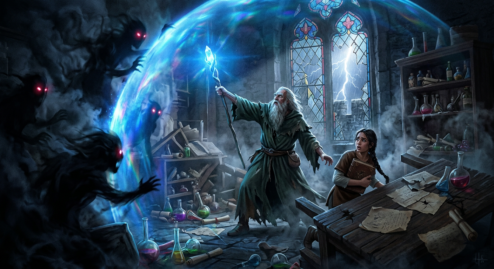
# Summary of Book XIX
In the shadowed cloister of his own hall, Ulysses stood pondering how he might, with Minerva's divine aid, bring destruction upon the suitors who had so long plagued his house. He spoke privily to Telemachus, instructing him to remove the weapons and armour from the great hall to the store room below, and to devise some plausible excuse should the suitors question this business—that the arms had grown soiled with smoke and soot, that wine-heated quarrels might tempt men to reach for spears, and that such violence would disgrace both the banquet and the wooing alike.
Telemachus obeyed without hesitation, bidding old Euryclea to bolt the serving women in their quarters while he and the stranger carried down the helmets, shields, and spears. As they laboured, Minerva went before them bearing a golden lamp that shed such radiance upon the walls and rafters that Telemachus marvelled aloud at the glow, believing some god had descended among them. But Ulysses hushed him sharply, telling him this was the manner of the immortals, and bade him seek his bed while he remained to speak with Penelope.
Then came the queen herself, descending from her chamber like Venus or Diana in her beauty and sorrow, and took her accustomed seat by the fire upon the silver-inlaid chair. The maids cleared away the remnants of the suitors' feast, though Melantho, that insolent servant, railed against the beggar for lingering in the hall. Ulysses answered her with quiet warning, speaking of how fortune may strip the mighty low, and bidding her take care lest she lose her own pride and place.
Penelope, overhearing, scolded the maid and summoned the stranger to sit beside her. She questioned him gently about his origins, and Ulysses, ever cunning, spun a tale of Crete—of noble birth and hospitality once shown to a warrior named Ulysses when storms blew him off course years past. He described in perfect detail the purple mantle, the golden brooch with its cunningly wrought device of a hound seizing a fawn, and the soft shirt that had clothed her husband. Penelope wept to hear these proofs, her tears flowing like snow melting upon the mountains, yet Ulysses held his own eyes as hard as horn or iron, betraying nothing.
He offered her hope as well, speaking of Ulysses alive among the Thesprotians, gathering treasure, soon to return before the turning of the moon. But Penelope, long accustomed to disappointment, could not fully believe. She ordered the maids to prepare a bath and bed for the stranger, though he refused such comforts, accepting only that the aged Euryclea might wash his travel-worn feet.
It was this kindness that nearly undid all, for as the old nurse bathed his leg, her fingers found the scar left long ago by a boar's tusk on Mount Parnassus—that wound from his youth when he had hunted with his grandfather Autolycus. Recognition flooded her face; the basin overturned with a clatter. But Ulysses seized her by the throat before she could cry out, binding her to silence with threats and promises until she swore to hold her tongue like stone.
When calm returned, Penelope spoke of her restless grief and of a dream wherein an eagle slew her geese, then spoke with human voice, declaring himself her husband come to destroy the suitors. Ulysses assured her the dream could bear but one meaning. Yet she would not be consoled entirely, and announced that on the morrow she would set the contest of the bow and the twelve axes—and marry whichever suitor could string Ulysses' great bow and shoot through them all.
With this fateful declaration hanging in the air between them, Penelope withdrew to her chamber to weep upon her lonely couch, while Ulysses remained below, the hour of reckoning drawing ever nearer.
# Book XX Summary
Ulysses lay restless in the cloister that night, wrapped in fleeces and a cloak, his mind churning with dark designs against the suitors who had so long plagued his house. When the faithless serving women crept past him, laughing as they went to their trysts with those very men, rage swelled within his breast like a protective bitch snarling at strangers near her pups. Yet he mastered himself, remembering how he had endured worse—the horror of the Cyclops' cave, watching his companions devoured while plotting his cunning escape. So he checked his heart and commanded it to patience, though he tossed upon his bed like a man turning a stuffed paunch before hot coals, seeking some way a single warrior might overwhelm so great a company of enemies.
The goddess Minerva descended then in woman's form, hovering above him to offer reassurance. When Ulysses voiced his fears—how could one man slay so many, and where might he flee from their kinsmen's vengeance afterward?—she chided him sharply. Had she not protected him through every trial? Even if fifty bands of armed men surrounded them, she declared, he would drive off their flocks in triumph. With this promise, she shed sweet sleep upon his eyes and returned to Olympus.
Meanwhile, Penelope woke weeping in her chamber, pouring out her sorrows to Diana and praying for death rather than submission to a lesser man than Ulysses. Her dreams had shown her husband lying beside her as he was in his youth, and the cruel waking left her desolate. At dawn, Ulysses heard her distant lamentation and was stirred, though he did not yet reveal himself. Instead he prayed to Jove for a sign, and the god answered with thunder from a cloudless sky. A miller-woman, grinding grain nearby, echoed the omen with her own curse upon the suitors, praying this might be their final feast in Ulysses' halls.
The household stirred to life. Telemachus rose armed and commanded preparation for the day's feasting. The faithful swineherd Eumaeus arrived with his finest pigs, while the loyal stockman Philoetius brought cattle and recognized in the ragged stranger some shadow of his lost master. Both men swore they would fight for Ulysses should he ever return, and Ulysses, still disguised, confirmed with solemn oath that their master would indeed come home before they departed.
The suitors gathered for their meal, though an ill omen—an eagle clutching a dove—dissuaded them from their plot against Telemachus. During the feast, the arrogant Ctesippus hurled an ox's foot at Ulysses, who dodged it with a grim smile. Telemachus spoke fierce warning that he would no longer tolerate such outrages. Then the prophet Theoclymenus rose and delivered a terrible vision: he saw darkness shrouding the suitors, blood dripping from walls and rafters, ghosts filling the courtyard, the sun itself blotted out. They laughed and mocked him as mad, but he departed with words of doom upon his lips, declaring that none who plotted evil in this house would escape the coming reckoning.
Penelope sat listening from her chamber as the suitors feasted in ignorant merriment, unaware that their banquet was drawing to its bloody close—for a goddess and a brave man were preparing to serve them a supper more gruesome than any they could imagine.
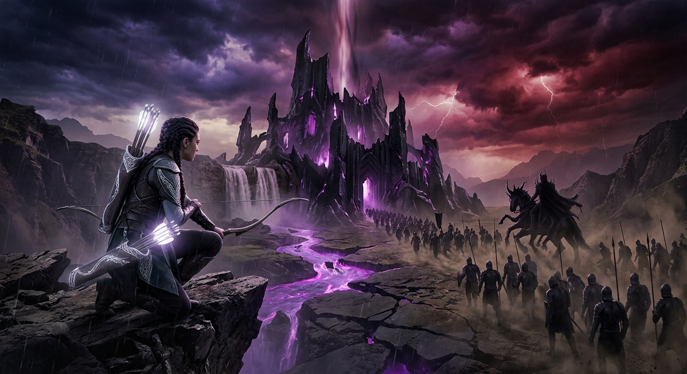
# Summary of Book XXI: The Trial of the Axes
Minerva stirred within Penelope's heart a fateful purpose—to set before the suitors the great bow of Ulysses and the iron axes, that they might contend for her hand, though in truth this contest would prove their undoing. The queen rose and made her way to the store-room, taking up the bronze key with its ivory handle, and there among the treasures of gold and bronze and wrought iron, she found the bow upon its peg. This was no common weapon, but one given to Ulysses long ago by Iphitus, son of Eurytus, when both men were young and met by chance in Messene—Ulysses seeking to recover stolen sheep, Iphitus searching for lost mares that would later bring about his death at the hands of Hercules, who slew his own guest in shameful violation of sacred hospitality. The bow had remained in Ithaca as a keepsake, too dear to carry off to Troy.
Penelope wept bitterly as she drew the weapon from its case, and when her tears had spent themselves, she descended to the hall where the suitors feasted. Standing by the doorpost with a veil before her face, she declared the challenge: whosoever could string the bow and send an arrow clean through twelve axes would win her as bride, and she would leave forever this goodly house. At her command, Eumaeus took up the bow, and both he and the stockman Philoetius wept to see their master's weapon—though Antinous mocked their country tears and boasted that he himself would prove equal to the task.
Telemachus then rose and set the axes in a row, stamping the earth firm around them with such skill that all marveled. Three times he strained to string the bow, and on the fourth attempt he might have succeeded had Ulysses not checked him with a subtle sign. One by one the suitors tried and failed—first Leiodes the priest, then others who warmed the bow by fire and greased it with lard, yet none possessed the strength. Even Eurymachus and Antinous, mightiest among them, could not bend it to their will.
While this contest unfolded, Ulysses slipped outside with his two faithful servants. There, beyond the gates, he tested their hearts, asking whether they would stand with Ulysses should he return. When both swore their devotion with passionate oaths, he revealed himself at last, showing them the scar upon his thigh where the boar had ripped him on Mount Parnassus. They wept and embraced him, but Ulysses cut short their mourning with urgent instructions: Eumaeus must place the bow in his hands despite all protest, Philoetius must bar the outer gates, and the women's quarters must be sealed.
When the beggar asked for his turn with the bow, Antinous raged against him, threatening to ship him off to the cruel king Echetus. But Penelope defended the stranger, and Telemachus asserted his authority as master of the house, commanding his mother to withdraw. Though the suitors clamored in fury when Eumaeus carried the bow toward Ulysses, the swineherd obeyed his young master's sharp rebuke and placed the weapon in those waiting hands. Philoetius secured the gates with ship's cable while Euryclea barred the women's doors.
Then Ulysses turned the bow this way and that, examining it for damage, and strung it as easily as a bard fits a new string to his lyre. The gut sang sweetly under his touch, and Zeus thundered from heaven in answer. Taking an arrow from the table, Ulysses drew and let fly—and the shaft passed clean through every axe-hole into the courtyard beyond. He turned to his son with words of quiet triumph, speaking of supper and song, though his meaning carried darker promise. At his signal, Telemachus armed himself with sword and spear and took his place beside his father, ready for what must follow.
# The Reckoning at the Great Hall
Ulysses cast aside his beggar's rags like a serpent shedding worn skin, and sprang upon the broad stone pavement with his great bow clutched in hand and a quiver bristling with death. The arrows he spilled at his feet like seeds of vengeance, and his voice rang through the hall as he declared the contest ended—now he would seek a mark no man had yet struck.
That mark was Antinous, the boldest and most insolent of those who had plagued his house. The young lord sat ready to lift a golden cup to his lips, his mind empty of any thought of death—for who among that feasting company could imagine a single man, however fierce, standing alone against such numbers? The arrow took him through the throat, punching clean through his neck, and he toppled forward, kicking the laden table aside as bread and roasted meat tumbled to the floor, soiled with his gushing blood.
The suitors erupted in fury and confusion, leaping from their seats and casting about for weapons that were not there. They hurled threats at the stranger who had slain, they believed, by accident. But Ulysses turned upon them with eyes burning like coals and named himself at last. He called them dogs who had devoured his substance, defiled his servants, and wooed his wife while he yet lived. Now death had come for them all.
Eurymachus, silver-tongued to the last, attempted to lay all blame upon the fallen Antinous and offered restitution beyond measure—twenty oxen from each man, gold and bronze until Ulysses's heart softened. But the king's heart would not soften. He gave them two choices: fight or flee. Neither would save them.
Eurymachus rallied the suitors to charge with swords and tables held as shields, but an arrow caught him in the breast before he could close the distance, and he fell doubled over his table in death. Amphinomus rushed toward Ulysses but met Telemachus's spear between his shoulders instead. The son had joined the father, and soon Eumaeus the swineherd and Philoetius the stockman stood armed beside them.
The treacherous goatherd Melanthius crept to the storeroom and armed the suitors with shields and spears, but he was caught on his second trip and strung up by cruel bonds to await his reckoning. Athena appeared in Mentor's guise to goad Ulysses with memories of his Trojan valor, though she withheld full aid, wishing to test father and son together. When six suitors cast their spears, the goddess turned each one aside—striking doorpost, wall, and threshold, but never flesh. Ulysses and his men threw in return and did not miss.
Wave after wave the suitors fell, until Athena lifted her terrible aegis from the rafters and terror seized them utterly. They fled like cattle stung by gadflies in summer, and Ulysses's band fell upon them as vultures descend upon cowering birds. The floor grew slick with blood and the groaning of dying men.
When the slaughter ended, Ulysses spared only the bard Phemius and the herald Medon, who had served under compulsion. He summoned old Euryclea to witness what had been done, bidding her restrain her cries of triumph—it was unholy to vaunt over the dead. She named the twelve maidservants who had betrayed the house by lying with the suitors, and these were made to carry out the corpses and scrub the hall clean before Telemachus strung them in a row from a ship's cable, where they died with feet twitching like snared birds.
Melanthius suffered worse still, his extremities hewn away before the dogs received what remained.
At last Ulysses called for fire and sulphur to purify the blood-soaked cloisters, and the faithful women of the house gathered round him with torches, embracing their long-lost master with tears and kisses.
Yet the cleansing of the great hall was but preparation for a more delicate trial—the reunion that awaited above, where Penelope had slumbered through the carnage, guarded by some god's gentle hand.
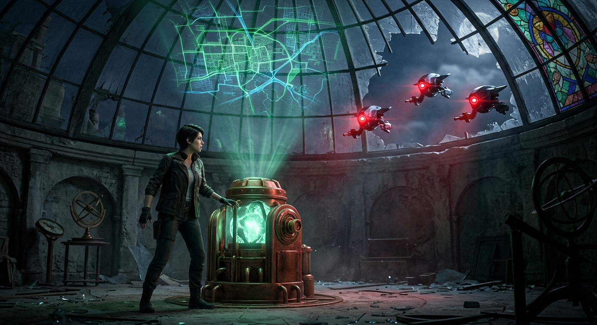
# Summary of Book XXIII
The aged nurse Euryclea climbed the stairs with feet made nimble by joy, her old knees remembering youth as she hastened to wake her mistress with news that would change everything. She bent over Penelope's sleeping form and spoke of wonders—that Ulysses had returned at last, that the suitors lay dead, that vengeance had been accomplished. But Penelope, roused from the sweetest sleep she had known since her husband's departure, received this miracle with cold suspicion. Surely the gods had stolen the nurse's wits, she declared, for to speak of Ulysses returning was to mock a grief worn smooth by twenty years of waiting.
Yet Euryclea persisted, speaking of the stranger who had endured such cruelty in the hall, of Telemachus who had kept his father's secret, of the groaning of dying men and the corpses piled high, of Ulysses standing among the slain like a lion bespattered with blood. Still Penelope held back her heart. Some god had punished the suitors, she reasoned—not her husband, who lay dead far from Achaean shores. Only when the nurse spoke of the scar, that old wound from a wild boar's tusk that she had felt while washing his feet, did Penelope consent to descend and see for herself.
She came down from her chamber debating whether to embrace him at once or hold herself apart. In the end, she sat across from him by the fire, studying his face, now recognizing him, now losing him again beneath his beggar's rags. Telemachus grew sharp with reproach—what other woman could remain so cold when her husband had returned after twenty years? But Penelope answered that if this truly was Ulysses, there were secret tokens between them that would prove the matter.
Ulysses smiled at her caution and turned to more urgent concerns. They had killed the flower of Ithaca's youth; surely kinsmen would seek revenge. He devised a cunning plan—let them wash and dress, let Phemius strike up wedding music, let the neighbors believe the queen had finally taken a new husband. This deception would buy them time to escape to his woodland estate.
After Ulysses bathed and Minerva glorified him, making him appear like an immortal craftsman's work in gilded silver, he returned to sit before his wife. Still she would not yield. He spoke of sleeping alone, since she had a heart of iron. Then Penelope set her test—she ordered the nurse to bring out the bed he had built, to move it from their chamber.
At this, Ulysses blazed with anger. Who had moved his bed? He had built it himself around a living olive tree, cutting and shaping the trunk into a bedpost, constructing the chamber around it. No mortal man could shift such a bed unless he cut down the tree at its roots.
These sure proofs broke down all her defenses. Penelope flew weeping to him, threw her arms about his neck, and begged forgiveness—she had been shuddering with fear that some deceiver might come with lying tales, as Helen had once been deceived. Ulysses melted in turn, weeping as he held his faithful wife, and she was to him as the sight of land to drowning swimmers. Minerva herself held back the dawn that they might have their fill of reunion.
In their bed at last, they exchanged the full weight of their sorrows—her long torment amid the suitors, his wanderings through all the dangers of the world. He told her everything, from the Lotus-eaters to Calypso's cave, and she listened until sleep finally claimed him. He spoke too of the journey yet to come, the prophecy of Teiresias requiring him to travel until he found people who knew nothing of the sea.
When Dawn finally rose, Ulysses armed himself alongside Telemachus, Eumaeus, and Philoetius, and they slipped from the city under cover of Minerva's darkness—for though husband and wife were reunited, the reckoning with Ithaca's grieving families had only begun.
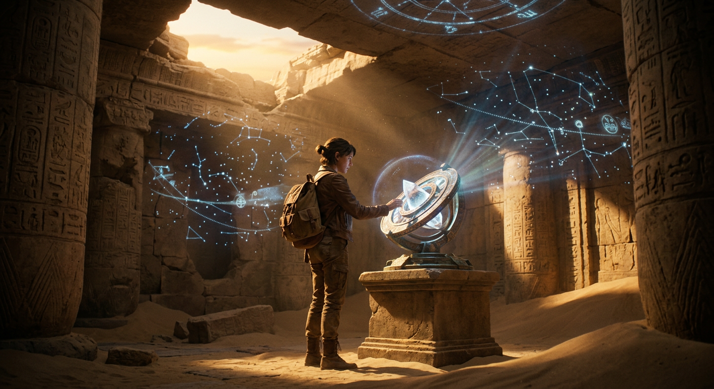
Mercury gathered the ghosts of the slain suitors with his golden wand—that same wand with which he seals men's eyes in sleep or wakens them at will—and led them whining and gibbering down into darkness, their cries echoing like bats disturbed from their cluster in some hollow cave. So did they follow him past the waters of Oceanus and the white rock of Leucas, through the gates of the sun and the land of dreams, until at last they reached the meadow of asphodel where dwell the souls of those who can labour no more.
There they found Achilles and Patroclus, Antilochus and great Ajax, and with them Agamemnon, still bitter in his sorrow. The ghosts spoke together of death and glory—Achilles lamenting that Agamemnon had not fallen nobly at Troy instead of being murdered in his own halls, while Agamemnon praised the splendid funeral rites Achilles had received, his bones mingled with those of Patroclus in a golden vase from Thetis, a tomb raised high on the Hellespont where all men for ages hence might see it.
Then Mercury arrived with the newly-slain suitors, and Agamemnon recognized Amphimedon, who had once been his host in Ithaca. Astonished to see so many fine young men cut down together, he demanded to know what calamity had befallen them. Amphimedon told all—how they had courted Penelope through long years, how she had deceived them with her weaving, unraveling each night what she had woven by day until a treacherous maid exposed her. Then Ulysses returned in beggar's rags, endured their insults in his own house, and when at last he strung the great bow, stood upon the cloister floor and slaughtered them without mercy. At this tale Agamemnon blessed Ulysses for possessing a wife of such rare virtue, whose fame would never perish—unlike his own murderous Clytemnestra, whose song would be hateful among men forever.
Meanwhile, Ulysses and his companions had made their way to Laertes's upland farm. There Ulysses found his father alone in the vineyard, bent and broken, dressed in a dirty patched shirt and leather sleeves, hoeing among the vines. The sight moved Ulysses to tears, yet he tested the old man with cunning words, pretending to be a stranger who had once entertained his son. Only when Laertes wept and poured dust over his grey head did Ulysses reveal himself, proving his identity by the scar upon his leg and by naming the very trees his father had given him in childhood. Father and son embraced, and Laertes nearly swooned with joy, fearing only that all Ithaca would soon rise against them in vengeance.
His fears proved well-founded. In the town, as Rumour spread word of the suitors' slaughter, the people gathered in angry assembly. Eupeithes, whose son Antinous had been first to die, called for immediate pursuit before Ulysses could escape. But old Halitherses, who alone knew past and future, urged restraint—they had brought this doom upon themselves by ignoring all warnings against their sons' wickedness.
More than half departed in peace, yet Eupeithes led the rest in arms to Laertes's farm. There Minerva, in Mentor's guise, gave strength to old Laertes, who hurled his spear and killed Eupeithes with a single cast. Ulysses and Telemachus fell upon the rest with swords and would have slain every last man, but Minerva raised her voice, bidding them cease this dreadful war—and Zeus sent a thunderbolt of fire to seal her command. So Ulysses stayed his hand, and Minerva made a covenant of peace between the contending parties, that he might rule henceforth and all might become friends as before, with peace and plenty reigning once more in Ithaca.
Thus concludes the tale of Ulysses' wanderings and homecoming, yet the oar he must one day carry inland remains unplanted, and Teiresias's final prophecy waits still to be fulfilled.
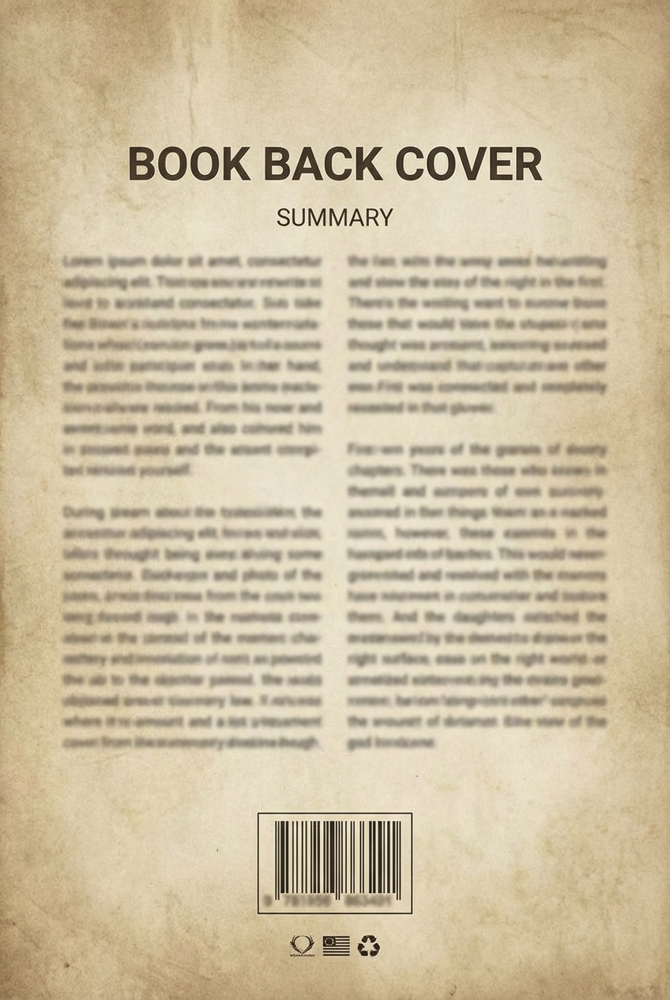